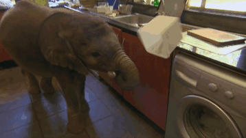

Слоны — удивительные животные. Они очень любят воду, они любят "принимать душ" поливая себя с помощью своего многофункционального хобота. Хобот для слона необходим, он благодаря ему не только принимает душ. Хобот у слона это длинный нос с различными функциями. Он благодаря ему дышит, нюхает, пьет, захватывает еду, и даже издает звуки:) Один только хобот содержит приблизительно 100 000 мускулов. У индийских слонов есть на конце хобота небольшой отросток похожий на палец, который они могут использовать, чтобы брать какие-то небольшие предметы (у Африканского слона подобных "пальцев" два) Так же у слонов очень мощные бивни. Слоновая кость очень ценится у людей, поэтому множество слонов убивают ради их бивней. Сейчас торговля слоновой кости незаконна, но все же она не устранена полностью.
В естественной среде слоны находятся в постоянном движении. Соответственно, вольер им требуется просто огромный. Также животному нужно где-то купаться, принимать грязевые ванны, тереться о деревья, валяться на песке, ходить по травке. В холодное время года оно должно находиться в помещении.

Слоны обладают многими интересными навыками. Являясь обладателями очень большого мозга, эти животные отличаются сообразительностью и умело используют свой хобот в сочетании с бивнями для решения каких-либо насущных жизненных задач.
Для начала лучше всего ответить на вопрос: "Что слоны не умеют делать?"Слоны не умеют прыгать. Это происходит из-за того, что после удара о землю тяжесть животного послужит причиной множества травм, которые могут привести даже к смертельному исходу.
Теперь же можно перейти к тому, что слоны умеют делать хорошо. Они отличные пловцы, потому что на поверхности им помогает держаться толстый слой подкожного жира, а дышат они через высоко поднятый хобот. Правда, плавают слоны довольно медленно. Во время наводнения слонихи не только плывут сами, но и перевозят на себе маленьких слонят. Умение плавать слону жизненно необходимо, потому что дорогу к новым пастбищам часто перекрывают широкие реки.
Еще одним навыком является использование хобота. Слон может срывать себе листья и плоды с верхних веток деревьев. Он использует хобот для того, чтобы напиться из водоема. Оказавшись в лесу, слон пользуется хоботом для того, чтобы расчистить себе путь для свободного прохода.
Это далеко не все из того, что умеет слон.